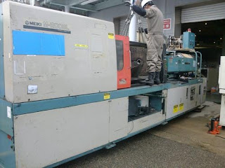

Jual Genteng Metal di Pontianak ☎ 0822 4582 0777 (Rinanti)
Pada kesempatan kali ini, kami berkesempatan untuk membahas beberapa produk tentang atap. Dikarenakan banyak keunggulan yang mengalahkan kayu sebagai rangka konvensional. Karena tanpa atap maka sebuah bangunan tidak dapat disebut bangunan dan hanya dapat disebut sebagai bangunan terbengkalai. Oleh karena itulah kita pastinya membutuhkan atap di setiap pembangunan. Adapula atap galvalum yang berbentuk unik yaitu atap lengkung galvalum. Ada pula atap galvalum dengan bentuk unik seperti atap lengkung, gelombang dan lain sebagainya.
Distributor & Supplier Genteng Metal

Penggunaan zincalume memang memberikan keuntungan khusus yang tidak akan anda temukan di genteng keramik pada umumnya. Secara sederhana genteng metal Pontianak adalah salah satu jeni genteng yang terbuar dari kumpulan berbagai bahan logam dan memiliki ciri kas mengkilat, ringan dan tahan lama. Genteng metal adalah genteng yang terbuat dari campuran dari bahan bahan yang terbuat dari logam, seperti zinc, baja ringan dan galvanis. Salah satu dari kelebihan genteng metal Pontianak adalah lebih membuat rumah anda bersih, rapi, lebih anti bocor, dan juga lebih ringan. Anda cukup menghubungi contact person yang sudah tertera di setiap industri yang anda butuhkan. Apakah anda sedang mencari genteng metal Pontianak berkualitas? Maka anda berada di tempat yang tepat, silakan kunjungi dis.or.id dan dapatkan info menarik khusus untuk anda yang ingin segera mengetahui keunggulan genteng metal Pontianak ini.
kami berusaha mencari kepuasan pelanggan kami. Karena kepuasan dan kepercayaan pelanggan adalah segalanya bagi kami.
Info Pemesanan Selengkapnya
Google Maps: https://www.google.com/maps/d/u/0/viewer?mid=18K_Vf8GKnjN9AtE2jUMATDSYvScojDst&ll=-7.269373870070218%2C112.655575&z=16
Note: https://www.facebook.com/notes/distributor-of-industrial-supply/pabrik-supplier-genteng-metal/1783191985314014/
Event: https://www.facebook.com/events/1480458558737554/
Portfolio Produk: https://www.facebook.com/pg/DistributorOfIndustrialSupplyDIS/photos/?tab=album&album_id=1683750531924827
Distributor & Supplier Besi Beton

Besi beton adalah besi yang digunakan untuk penulangan konstruksi beton atau biasa dikenal sebagai fungsi badan bertulang. Besi beton sendiri adalah material yang biasa digunakan dalam konstruksi dengan kekuatan yang sangat besar serta tahan terhadap berbagai guncangan dan tekanan. Berbagai macam tipe tersebut bisa Anda gunakan untuk pembangunan. Berikut fungsi dan kelebihan dari besi beton yaitu memiliki tekanan yang kuat dan lebih tinggi dibandingkan dengan bahan lainnya, tahan terhadap api dan air dan juga memiliki struktur terbaik pada bangunan jika banyak bersentuhan dengan air, memiliki struktur yang cukup kokoh, tidak memerlukan biaya pemeliharaan yang cukup tinggi, dapat dirakit dalam bentuk yang sangat beragam dan masih banyak lagi kelebihan yang bisa anda dapatkan dengan menggunakan Besi beton.
Salah satu cara untuk mendapatkannya adalah dengan membeli di dis.or.id. Dengan mengunjungi situs tersebut, anda bisa mendapatkan detail info serta harga yang pastinya sangat murah di bandingkan tempat lainnya. Kualitas dan mutunya pun telah terjamin.
Distributor & Supplier Steel Grating

Grating merupakan jenis baja yang bisa dibentuk kotak-kotak ataupun bilah yang antar bagiannya saling membentuk hubungan. Salah satunya dengan menggunakan grating dalam kombinasi pembangunan. Secara umum, produk ini digunakan dalam kontruksi lantai, kemudian deck, anak tangga pada bangunan pabrik kemudian, tambang minyak dan sejumlah bangunan industri lain nya. Tetapi, jangan hanya memperhatikan harga karena Anda harus mempertimbangkan kualitasnya terlebih dahulu. Selain untuk keamanan, juga untuk aksesoris kolam renang. Grating ini bisa dirangkai plat strip besi baja dan besi ulir yang dilas pada permukaan silangnya sehingga akan membuat bangunan lebih kokoh dan kuat. Plat Grating dapat Anda temui dimana saja.
Anda bisa mendapatkan steel grating berkualitas dengan mengungjungi dis.or.id. Disana anda bisa mendapatkan steel grating dengan berbagai ukuran tertentu dengan harga yang sangat terjangkau namun berkualitas dan bermutu tinggi. Memesan steel grating di dis.or.id pastinya anda tidak akan merasa rugi.
Distributor & Supplier Pipa (Hitam/Gas, Galvanis)

Manfaat dari pipa hitam galvanis memang banyak sekali untuk kebutuhan konstruksi bangunan. Setiap konstruksi bangunan pasti akan memanfaatkan jenis pipa hitam karena ia sangat kokoh, bahkan bagian luarnya telah terlapis oleh stainless steel sehingga menjadikannya tahan korosi. Karena telah diproduksi khusus untuk kebutuhan pertambangan minyak gas, tak heran bila banyak orang yang mengira bahwa nama asli dari pipa ini adalah pipa gas. Karena telah terlapis dengan material stainless steel pipa ini jadi tahan karat dan korosi, sehingga dapat anda aplikasikan untuk segala kondisi cuaca di Indonesia. Tentukan kebutuhan pipa hitam anda pada kami, tersedia ukuran ½ inc sampai 40 inc. Hubungi segera kontak yang telah tersedia untuk informasi lebih detail, kami menerima segala kebutuhan besi baja anda kapanpun dan dimanapun.
Distributor & Supplier Kawat Bronjong/Gabion

Hal ini disebabkan kawat ini dilapisi dengan galvanis. Selain itu, sebenarnya kawat bronjong ini juga bisa dikatakan sebagai pemerkuat bukit. Selain itu, kawat ini juga digunakan pada tiang penyangga bangunan besar atau tiang penyangga jembatan. Kawat bronjong biasa dilapis oleh galvanis yaitu suatu lapisan anti karat agar kawat dapat tahan lama dan tidak gampang berkarat.
Jika sat ini anda sedang membutuhkan kawat bronjong, anda bisa langsung saja mengunjungi dis.or.id. Disan anda bisa mendapatkan informasi tentang kawat bronjong dengan berbagai ukuran dan harga yang pastinya sangat terjangkau. Sehhingga, anda bisa leluasa memilih kawat bronjong mana yang susuai dengan yang anda butuhkan.
Distributor & Supplier WF H-beam

Saat ini, banyak orang yang ingin mencari jenis besi WF, terlebih ini zaman yang serba modern dan praktis. Konstruksi baja banyak yang memakai besi ini untuk bahan bajanya. untuk harganya, besi WF tergolong cukup terjangkau dan tidak terlampau mahal. selain itu, besi ini ternyata memiliki kualitas yang terjamin sehingga tidak diragukan lagi. Sungguh mudah bukan?
Saat membawanya pun Anda akan lebih mudah dan praktis. Pembawaan bebannya pun juga sangat mudah dan terjamin.
Kini anda bisa mendapatkan besi WF H-beam dengan sangat mudah, caranya anda bisa langsung saja datang ke dis.or.id. Ada baiknya anda langsung mengunjungi dis.or.id. Segera kunjungi situs tersebut dan dapatkan penawaran menarik.
Distributor & Supplier Expanded Metal
.jpg)
Expanded metal atau yang biasa dikenal dengan sebutan X.P.M. ini merupakan salah satu produk hasil dari kemajuan teknologi saat ini. Dimana Expanded Metal ini dibuat dengan menggunakan baja berkadar karbon rendah tanpa di las, tanpa sambungan dan dikenal lebih kuat. Expanded Metal memiliki keunggulan dibandingkan dengan yang lain dari sisi kekuatannya yang cukup bagus serta biasa digunakan sebagai instalasi pagar, lantai, ataupun dinding. Selain itu, Expended Metal juga dikenal mampu menahan beban berat, memiliki permukaan yang anti slip/tidak licin, dan juga dikenal tahan karat untuk material yang dari alumunium.
Kini anda bisa mendapatkan expanded metal dengan kualitas dan mutu yang telah terjamin di dis.or.id. Disana anda bisa menemukan dan memesan langsung expanded metal yang anda butuhkan.
Distributor & Supplier Plat (Hitam, Kapal, Bordes, Strip)

Plat yang satu ini mungkin yang paling banyak kita jumpai, bukan sebagai plat bahan bangunan namun sering digunakan sebagai plat lantai pabrik, kendaraan dan berbagai fungsi lainnya. Namun selain itu anda juga dapat membeli nya secara online karena saat ini banyak sekali toko online yang melayani penjualan plat besi lembaran. Harga plat besi bordes, strip dan plat besi lainnya sangat terjangkau per meter persegi.
Dis.or.id juga menawarkan plat hitam, kapal, bordes dengan ukuran yang telah anda tentukan. Segera hubungi nomor dis.or.id dan segera order karena dis.or.id adalah agen resmi yang langsung mengambil plat hitam ini dari pabriknya. Tak perlu lagi bingung mencari plat hitam yang murah dan berkualitas.
Distributor & Supplier Floor Deck (Bondex)

Floor deck ini adalah material yang bisa difungsikan sebagai media pengganti dari material konvensional yang umumnya berbentuk papan lebar, misalnya saja seperti triplek. Jika memilih menggunakan Floor Deck ini bisa langsung berfungsi juga sebagai bekisting permanen dan siap di cor dalam waktu singkat. Untuk bahan utamanya sendiri umumnya berasal dari plat baja jenis galvanized dilengkapi dengan tulang. Floordeck atau bondek ini adalah material bangunan yang terbuat dari bahan baja galvanis dengan kekuatan tinggi yang mampu menahan beban struktur pelat yang ada pada lantai. Maka dari itu tidak mengherankan jika saat ini banyak yang lebih memilih menggunakan Floor Deck ini.
Jika anda saat ini sedang mebutuhkan floor deck dengan kualitas yang mumpuni, anda bisa langsung mengunjungi situs dis.or.id. Anda juga bisa langsung memesannya ataupun hanya ingin mengetahui detail harga yang di patok dari floor deck tersesbut.
Distributor & Supplier Atap Galvalum

Pada kesempatan ini, kami akan menjelaskan pengertian dari atap seng galvalum. Atap galvalum umumnya dijual dengan sistem per lembar.
Akan tetapi kelebihan kayu bila dibandingkan dengan atap galvalum adalah kayu memiliki nilai yang lebih tinggi daripada galvalum. Patut anda ketahui, jenis baja yang saya maksud kali ini bukan baja berat seperti halnya alat berat, melainkan baja ringan, sehingga tidak akan membebani dinding rumah anda. Atap galvalum memang menjadi salah satu incaran atap saat ini dikarenakan galvalum dinilai banyak orang lebih efektif jika dibandingkan dengan galvanis.
Ada anggapan bahwa atap galvalum membuat suasana menjadi panas dan bersik. Ini adalah kekeliruan besar, atap galvalum berbeda dengan atap seng. Disini kami menyediakan galvalum yang tentunya sesuai kebutuhan dan dengan harga yang sangat kompromi khusus untuk anda yang membutuhkannya. Jenisnya yang beragam dan banyak ukuran yang dapat disesuaikan mampu memenuhi kebutuhan anda. Perbedaan ukurannya terletak pada panjang, lebar dan tebalnya.
Distributor & Supplier Atap Lengkung

Dewasa ini, atap terbuat dari berbagai bahan yang sangat terkomposisi. Tidak terkecuali gudang, halte, maupun peneduh bagi kendaraan.
Salah satu jenis atap galvalum yang sekarang sedang populer adalah atap lengkung. Salah satunya juga harus kuat menahan derasnya air hujan.
Maka sudah pasti bahwa kualitas atap tersebut sangat diragukan. dis.or.id adalah distributor terpercaya untuk anda. Kami menyediakan atap lengkung sesuai dengan keinginan anda.
Distributor & Supplier Truss Canal C
Besi kanal C sebutan untuk besi yang satu ini. Oleh karena itulah besi ini menjadi buruan dan primadona bagi sebagian orang. Besi kanal C bisa menjadi pilihan yang tepat bila anda ingin membangun rumah minimalis dengan desain modern. Satu untuk rangka dan satunya lagi adalah untuk atap. Namun karena semakin susahnya mendapatkan raw materialnya, dan harga yang semakin ahal maka pemilihan besi kanal C menggantikan fungsi kayu dinilai adalah langkah yang tepat. Oleh karena itu, jangan ragu lagi atas kegunaan besi yang satu ini.
Distributor & Supplier Hollow Galvalum

Hollow galvalum menjadi primadona bagi banyak orang dikarenakan uniknya komponen berikut ini. Bahkan kini besi ini sudah mulai menggeser penggunaan kayu pada rangka plafon. Bahkan kini besi ini sudah mulai menggeser penggunaan kayu pada rangka plafon.
Bila anda ingin membeli Hollow galvalum dengan harga terjangkau dan tentunya kualitas terjamin, simak ulasan kami ini. Dengan berbagai keunggulan tersebut hollow galvalum mampu menggeser keberadaan kayu sebagai rangka atap bangunan. Dan apabila memungkinakan, pilihlah produk yang berstandar SNI dan bersertifikat. Untuk mendapatkan kriteria tersebut, anda bisa datang ke tempat kami. Dengan banyaknya cabang supplier kami dapat menjangkau pengiriman sampai ke pelosok Indonesia.
Distributor & Supplier Seng Gelombang

Atap adalah hal penting yang harus diperhatikan pada setiap bangunan. Andapun wajib memperhatikan bagaimana atap bagian bangunan tersebut apakah berkualitas ataukah tidak, atap dengan kualitas rendah akan beresiko kerusakan maupun kebocoran yang pasti merugikan seisi bangunan ruangan tersebut. Andapun wajib memperhatikan bagaimana atap bagian bangunan tersebut apakah berkualitas ataukah tidak, atap dengan kualitas rendah akan beresiko kerusakan maupun kebocoran yang pasti merugikan seisi bangunan ruangan tersebut. Atap menjadi bagian penting sebuah bangunan yang harus diperhatikan. Saking pentingnya, pasti dimana ada bangunan maka disitu ada atap yang menaunginya. Meskipun begitu, nyatanya seng gelombang memiliki kekurangan yakni ia lebih cepat menyerap panas.
Dengan seng gelombang kecil, anda tak perlu lagi repot memotong ukuran asli seng gelombang dan menata seng gelombang dengan ukuran yang pas pada atap bangunan.
Distributor & Supplier Plat Seng

Masing masing ukuran tersebut memiliki harga yang berbeda beda, karena biasanya harga akan tergantung dari berat dalam kilogram.
Jika anda penasaran dengan harga plat galvanis ini, silahkan hubungi customer service kami untuk menanyakannya. Selain lebih hemat, juga anda tidak harus membuang bagian yang tersisa. Namun apabila anda berencana membangun sebuah atap dari awal, sebaik nya anda membeli plat galvanis lembaran, karena kebutuhan anda banyak dan juga luas, sehingga yang lembaran ini akan lebih efektif untuk anda.
Oleh karena itu, peran atap pada sebuah rumah sangatlah penting.
Distributor & Supplier Besi Wiremesh

Wiremesh merupakan besi lonjor panjang yang disusun seperti anyaman sehingga membentuk lembaran. Besi wiremesh sering di anggap banyak orang adalah besi anyam karena strukturnya yang mirip dengan anyaman. Struktur anyam dari besi wiremesh sendiri juga bermacam-macam, anda bisa sesuaikan dengan kebutuhan apakah struktur anyam kotak atau yang jajar genjang. Pengaplikasian besi wiremesh dalam kehidupan ini cukup banyak, apalagi dalam dunia konstruksi, besi wiremesh dimanfaatkan sebagai penguat dak beton, plat lantai, dan juga anak tangga. Jika anda hendak mengaplikasikan besi wiremesh, maka tentukan dulu kebutuhannya sehingga bisa menentukan jenis wiremesh mana yang cocok untuk diaplikasikan. Untuk ketebalan besi wiremesh 8 – 10 adalah peruntukkan untuk bangunan bertingkat. Sedangkan untuk kebutuhan bangunan biasa, besi wiremesh yang digunakan adalah yang berketebalan 4 – 6. Untuk informasi lebih detail, anda dapat menghubungi kontak yang telah tersedia.
Distributor & Supplier Pagar BRC
.jpg)
Pagar BRC (British Reinforced Concrete) adalah pagar yang terbuat dari besi beton dengan diameter 5mm – 8mm dimana ketebalannya tergantung dengan ketinggian pagar. Setiap potongan besi tersebut kemudian digabungkan dengan bantuan mesin las wiremesh. Pemanfaatan pagar BRC sendiri tergolong sebagai pagar minimalis yang siap digunakan untuk melindungi sebuah bangunan. Pagar BRC juga tahan karat karena lapisan besi telah terlindungi dengan galvanis. Jika Anda membutuhkan pagar BRC ini segera kunjungi situs resmi kami untuk informasi lebih detail.
Distributor & Supplier Kawat Loket, Kawat Harmonika

Adalagi jenis kawat yang cocok diaplikasikan sebagai penyekat maupun kawat pagar, yakni kawat loket harmonika ini. Jika dilihat dalam kehidupan sehari-hari kawat harmonika banyak diaplikasikan untuk kebutuhan industri, konstruksi, rumahan, dan lainnya. Apalagi bila jenis kawat harmonika yang digunakan adalah galvanis yang terkenal tahan karat maupun korosi sehingga sangat awet. Untuk informasi lebih lanjut, anda dapat menghubungi kami! Ukuran lebar maksimal yang kami terima adalah 3 meter. Kami dapat menerima segala kebutuhan kawat harmonika anda dengan maksimal ukuran lebar sampai 3 meter.
Distributor & Supplier CNP & UNP

Besi yang sering diaplikasikan untuk keperluan sambungan dan dudukan atap adalah besi kanal UNP, bentuk besi ini melengkung dan membentuk huruf U. Selain sebagai material konstruksi sambungan, besi kanal U banyak digunakan untuk kebutuhan penutup dinding / girts. Apabila anda amati sekali lagi, sebenarnya pemanfaatan dari besi UNP hampir mirip dengan WF, tapi karena besi UNP memiliki bentuk yang melengkung masih jarang orang yang memanfaatkan material ini untuk keperluan kolom bangunan. Besi yang sedikit lebih mirip dengan besi UNP adalah besi CNP, dimana pengaplikasian pada besi ini sendiri adalah pada cladding atau gording. Besi CNP dan UNP ini sangat fleksibel, ia bahkan dapat dimodifikasi dengan plat koil yang menggunakan sistem cutting, sehingga tak heran bila banyak orang memesan jenis besi ini. Anda bahkan bisa menggunakan besi CNP untuk memenuhi keperluan industri dalam bidang otomotif.
Distributor & Supplier Besi Siku

Setiap konstruksi bangunan tentu tidak akan luput dari kebutuhannya terhadap besi siku. Besi siku menjadi salah satu material yang dapat diandalkan sebagai besi penyangga. Kedua sisi pada besi siku berbentuk tegak lurus dengan sudut yang berbeda, ada besi siku sama sisi, dlsb. Besi siku dibuat dengan ukuran maksimal 6 meter dan dapat menyesuaikan panjang sisi dan ketebalan tiap sisinya. Anda dapat mengunjungi situs resmi kami untuk info pemesanan besi siku selengkapnya! Telah tersedia besi siku dengan berbagai ukuran yang bisa anda pesan. Produk besi siku yang kami tawarkan cocok untuk beragam keperluan, baik rumahan, konstruksi, industri dan sebagainya. Kunjungi website kami di www.dis.or.id atau menghubungi kontak yang tersedia.
Distributor & Supplier Hollow (Hitam, Galvanil, Galvanis)

Dengan menggunakan material ini pembangunan konstruksi juga bisa selesai lebih cepat sehingga meminimalkan upah pekerja. Besi hollow bisa dimanfaatkan untuk berbagai keperluan, misalnya seperti pagar, pintu besi, teralis, dan masih banyak lagi. Anda dapat menghubungi kontak kami untuk melakukan perhitungan kebutuhan hollow hitam tersebut. Hubungi kami untuk lakukan konsultasi kebutuhan besi hollow dan panjang yang dibutuhkan. Bagi anda yang membutuhkan besi ini, kami dapat membantu anda untuk menentukan ukuran besi yang diperlukan dengan menghubungi kontak kami!
Distributor & Supplier Pipa Pancang

Produk pertama industri DIS adalah pipa pancang. apalagi mengingat banyak yang mencarinya karena memang memiliki fungsi yang sangatlah bermanfaat. sedangkan untuk ukuran maupun spesifikasi yang di sediakan pun berbeda-beda sehingga Anda bisa dengan mudah menyesuaikannya. Nah, pipa ini sendiri memiliki berbagai ukuran maupun spesifikasi lainnya. Jika saat ini Anda salah satu yang membutuhkan pipa pancang, tidak perlu khawatir karena pipa ini akan di dapatkan dengan sangat mudah. apalagi jika yang di katakan adalah di industri DIS ini. Di sini Anda akan mendapatkan pipa pancang berkualitas yang siap di gunakan. Terlebih jika mengingat berbagai kelebihan dan fungsi nya yang bisa di terapkan di mana-mana.
Jasa Pondasi Bor (Strouss/Borepile)

oleh karena itu, jika Anda ingin menggunakan jasa pengeboran, tidak dapat di pungkiri lagi bahwa hal itu akan sangat membantu sebagai solusi. Terkait jasanya tidak perlu jauh-jauh karena di sini Anda bisa menemukan pemesanan yang mudah. sedangkan masalaha kualitas tentu saja bisa di percaya dan sangat terjamin hasilnya. Pelakunya pun merupakan orang-orang terlatih yang sadah profesional dan lebih berpengalaman. Berbicara lebih dalam tentang pengeboran, tersedia dua jenis yang bisa Anda pilih. Dalam hal ini jika tidak ingin menggunakan jasa bor, Anda bisa membeli mesinnya. Selain penggunaan jasa pondasi bor, Anda bisa memiliki mesin sendiri. Mesin seperti ini pun telah banyak di temukan di pasaran.
Distributor & Supplier Genset (New/Second)

Genset atau generator set tentu saja juga sudah sangat familiar karena memang hingga kini banyak yang menggunakannya. Apalagi manfaatnya yang bisa menghasilkan tenaga listrik. Dan kedua jenis tersebut bisa di dapatkan di DIS.
dengan demikian, pastilah akan lebih meringankan manakala Anda memilih genset yang sudah bekas. sedangkan dari segi merk, genset sendiri juga cukup variatif.
Distributor & Supplier UPS

Lain dari produk sebelumnya, untuk UPS mungkin belum cukup di kenal kecuali di dunia elektronik. Hanya saja, yang tidak mengetahui nya pu juga cukup banyak. Sedangkan dalam pengertiannya sendiri secara singkat UPS adalah salah satu alat elektronik di mana bisa menjadi sumber listrik ketika sumber utamanya putus. Dalam hal ini tentu cukup penting memilikinya. Terutama bagi yang sering menggunakan komputer. Termasuk juga kualitas barang dan kapasitas listrik yang si hasilkan. Mulai dari kualitas maupun kapasitas yang di miliki. mengingat akan hal tersebut, maka Anda bisa memilih yang paling pas untuk pembeliannya. Sedangkan untuk memiliki UPS berkualitas, Anda bisa merujuk pada DIS.
Distributor & Supplier Forklift (Second)

Di dunia industri, tentu saja penggunaan forklif juga tidaklah asing. oleh karena itu penjualan forklif pun banyak di mana-mana termasuk di sini. Termasuk jika ingin yang bekasnya pun di sini ada. sedangkan dari sisi kualitas barang yang di tawarkan di sini, jangan khawatir karena tentu saja akan sangat memuaskan. Dengan jaminan kualitas yang memadai ini, bisa di pastikan segala aktifitas industri Anda akan berjalan lebih lancar lagi. Apalagi, di sini yang di tawarkan adalah forklif yang siap pakai. Selanjutnya, jika forklif sudah tidak di gunakan, Anda pun bisa kembali menjualnya pada setiap distributor forklif sehingga tidak akan rugi membelinya.
Jasa Pembuatan Moulding Inject

Dalam hal ini kalau masalah kuantitas, maka tidak perlu bingung karena berapa pun kebutuhan Anda, di sini akan selalu siap melayani. Selain itu berapa pun kebtuhan Anda, pasti bisa di layani. Setelah menyesuaikannya dengan benar, maka Anda akan mendapatkan moulding inject yang tepat sasaran sesuai dengan produk. Tinggal menyesuaikan saja dengan bagaimana kebutuhan untuk produknya sehingga pencetakan yang di lakukan bisa menghasilkan bentuk yang tepat.
Jasa Pembuatan Sparepart Mesin Produksi / Alat Berat

Dalam dunia permesinan, sparepart tentu saja merupakan salah satu komponen penting yang perlu di perhatikan. jadi untuk itu silahkan Anda memilih jasa terpercaya yang akan membuatnya dengan maksimal sebagaimana di Industri DIS. Apalagi mengingat dukungan tenaga profesional yang di sediakan sehingga sparepart Anda akan lebih aman. Terkait dengan hal itu, perlu Anda ketahui bahwa pembuatan sparepart yang salah, bisa jadi akan membahayakan si pengguna. Karena jika ada kesalahan sedikit saja, bisa jadi akan berakibat fatal dan membahayakan penggunanya. Sedangkan harga penawaran, untuk setiap alat berat bisa berbeda tergantung jenis dan ukurannya. hal ini di sebabkan karena jika ada kesalahan, maka akibatnya akan fatal dan bisa membahayakan para pekerja yang menggunakannya. Nah, kalau di DIS, maka Anda pun akan mendapatkan alat berat yang berkualitas dan di jamin aman.
Jasa Service Elektronik (Kompor Gas, Dispenser, Mesin Cuci)

Kini elektronik memang semakin banyak di gunakan di kalangan masyarakat. Jadi ketika terasa ada yang salah dengan barang-barang elektronik Anda, jangan khawatir karena di sini Anda bisa memperbaiki dan mendapatkan hasilnya seperti sedia kala. Untuk kualitas service yang di tawarkan, jangan khawatir karena kualitasnya sangatlah tinggi. Barang yang bermasalah pun bisa berfungsi seperti sedia kala. Nah, apa pun barang yang perlu di perbaiki, kini akan kembali berfungsi seperti semula. Selain untuk perbaikan, Anda pun bisa juga hanya melakukan pengecekan tanpa keluhan sebagaimana service pada umumnya.
Banyak manfaat yang bisa didapatkan hanya dengan memasang atap sebagai peneduh bangunan anda. Memang, ada beberapa bangunan mewah yang sudah memakai beton sebagai atapnya. Seperti yang saya jabarkan diatas fungsi atap sudah tidak terbantahkan dan tidak dapat digantikan lagi. Bila anda berkenan, maka anda dapat mengujungi situs utama kami dis.or.id. Jadi bila anda tertarik dalam mencari berbagai jenis atap dan bingung dalam memilih.